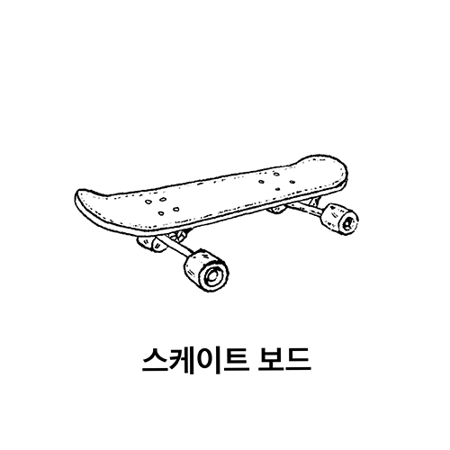
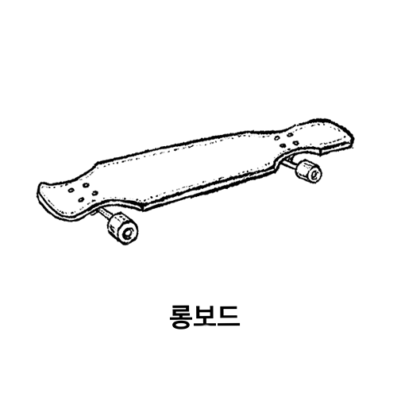

롱보드는 일반 보드와 무엇이 다를까?
 
일반스케이트 보드와 달리 긴 나무판에 큰 휠을 달고있는 롱보드
롱보드는 35~48인치의 긴 데크와 지름 65~80mm의 큰 바퀴를 달고있다.
길이가 길기때문에 발을 움직일 수 있는 공간이 많고, 바퀴도 크고 폭도 넓어 부드러운 주행을 할 수 있다.
어떻게 연습하면 좋을까?
1. 내가 하고싶은 라이딩 스타일을 결정하고 정보를 얻자
2. 내가 선호하는 그래픽이 그려진, 애착이 가는 롱보드를 선택하자
3. 푸쉬오프, 뛰어내리기, 방향전환등 기초를 탄탄하게 배우자
4. 기본기가 자유로워졌다면 하고싶은 기술을 차근차근 익혀나가자
5. 나의 스타일대로 자유롭고 즐겁게 타자
롱보드 구매시 필수로 선택할 부품
• 주행중 바닥에 닿아 보드를 굴러가도록 해주는 ''휠''
• 폭이 넓을수록 지면에 닿는 면적이 넓어 코너링에서 밀리지않도록 안정감
•폭이 좁을수록 안정감은 줄어들지만 기술적인 반응성이 빨라짐
• 폭이 넓을수록 지면에 닿는 면적이 넓어 코너링에서 밀리지않도록 안정감
•폭이 좁을수록 안정감은 줄어들지만 기술적인 반응성이 빨라짐
• 휠을 장착하여 좌우 방향 전환을 도와주는 ''트럭''
• 트럭의 높이가 높으면 기술적 퍼포먼스 향상되고 카빙에서 부담이 적어짐
• 트럭의 높이가 낮으면 안정적인 느낌
• 트럭의 높이가 높으면 기술적 퍼포먼스 향상되고 카빙에서 부담이 적어짐
• 트럭의 높이가 낮으면 안정적인 느낌
• 보드의 주행력을 유지해주는 ''베어링''
• 휠 중앙에 2개씩 총 8개가 장착어 휠의 회전을 유지하도록 도와줌
• 회전유지력, 내구성, 스페이서 빌트인 여부의 성능차이
• 휠 중앙에 2개씩 총 8개가 장착어 휠의 회전을 유지하도록 도와줌
• 회전유지력, 내구성, 스페이서 빌트인 여부의 성능차이
추가로 알아두면 좋은 부품
• 신발에 마찰력을 주어 라이더를 잡아주는 ''그립테이프''
• 데크위에 부착되는 사포재질의 테이프
• 킥그립과 사이드그립이 나눠지는 그립과, 보드전체를 감싸는 풀그립으로 나뉨
• 데크위에 부착되는 사포재질의 테이프
• 킥그립과 사이드그립이 나눠지는 그립과, 보드전체를 감싸는 풀그립으로 나뉨
• 데크와 트럭을 연결해주는 ''하드웨어''
• 볼트&너트로 구성되어있음
• 킥머리부분은 데크윗쪽, 너트는 트럭쪽으로 조립
• 볼트&너트로 구성되어있음
• 킥머리부분은 데크윗쪽, 너트는 트럭쪽으로 조립
 • 트럭의 높이를 높혀주는 ''라이저&쇼크패드''
• 트럭의 높이를 높혀주는 ''라이저&쇼크패드''• 데크와 트럭사이에 공간을 만들어주는 역할
• 휠과 데크가 닿아서 갑자기 보드가 멈추는 상황을 방지